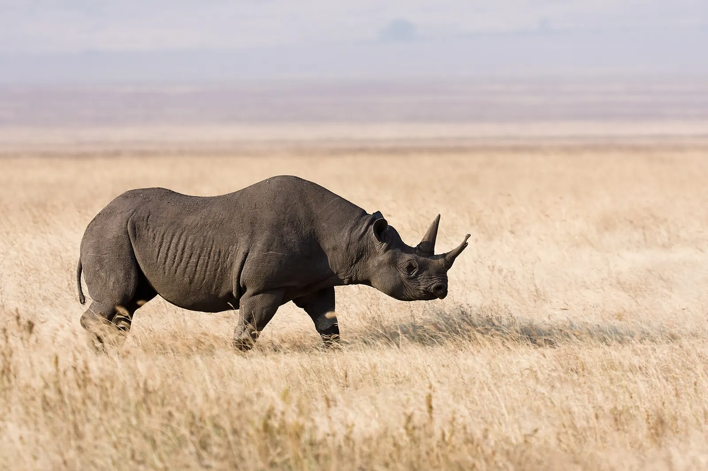
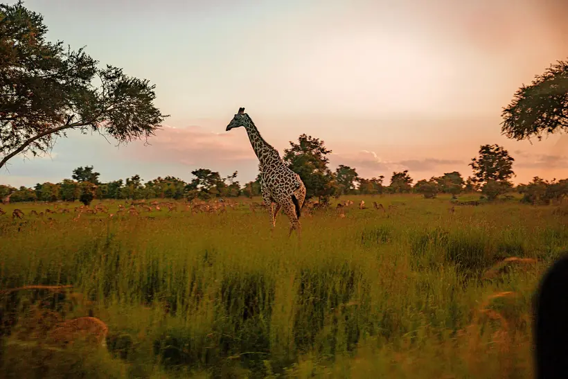
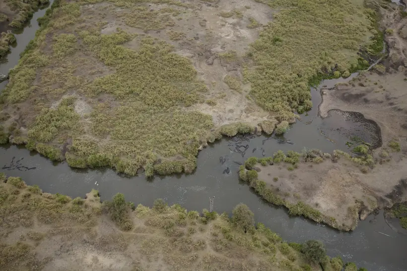

Tanzanie — Arusha, Tarangire, Manyara, Ngorongoro & Serengeti
Les Joyaux du Nord
Le grand classique tanzanien, resserré sur huit jours sans jamais se presser : quatre parcs majeurs reliés par des routes courtes et un vol retour en avion léger. Du lac Manyara aux plaines du Serengeti, chaque étage écologique apporte sa faune, ses oiseaux et ses paysages. Un rythme pensé pour tous, y compris les familles qui découvrent le safari.
Le circuit en bref
Durée
8 jours / 7 nuits
Confort
Confort premium — Lodges de charme & camps sous tente permanents
Tarif
3 890 € à partir de, par personne
Groupe
4 à 12 voyageurs
Meilleure période
Jan, Fév, Juin, Juil, Aoû, Sep, Déc
Prochains départs
7 février 2026 · 13 juin 2026 · 25 juillet 2026 · 12 septembre 2026

Ce que vous allez vivre
- Quatre parcs du circuit nord en une semaine, sans route de plus de quatre heures
- Descente dans le cratère du Ngorongoro, haut lieu des rhinocéros noirs
- Lac Manyara et ses bandes de flamants, buffles et lions arboricoles
- Game drive dans le Serengeti central autour des kopjes de Seronera
- Vol retour en avion léger pour éviter six heures de piste
- Arrêt dans une ferme de café de Karatu, entre deux parcs
Le fil du voyage
- J1Arrivée à Kilimandjaro — Arusha
- J3Lac Manyara — la forêt aux lions arboricoles
- J5Route vers le Serengeti central
- J7Dernière matinée — vol vers Arusha
Jour par jour
L'itinéraire en détail
Un rythme pensé pour la lumière du matin et du soir — les heures où la savane s'anime.
-
Arrivée à Kilimandjaro — Arusha
Accueil personnalisé à la sortie de l'aérogare, puis transfert vers Arusha, à une heure de route sous les bananeraies. Installation dans un lodge niché dans un jardin de caféiers, vue sur le mont Meru par temps clair. Réunion d'accueil en fin d'après-midi avec votre guide, dîner convivial autour de la spécialité locale, le nyama choma grillé au feu de bois.
Ngarenaro Garden Lodge (lodge de charme, Arusha) Dîner -
Tarangire, la rivière aux éléphants
Route de deux heures vers Tarangire, dont les baobabs millénaires et les marigots attirent les plus grandes hardes d'éléphants de Tanzanie. Matinée de game drive le long de la rivière, pique-nique à l'ombre des tamarins. L'après-midi, remontée de la vallée vers les collines de Sangaiwe en guettant les léopards dans les fourrés d'acacias.
Mwangaza Tented Camp (camp sous tente permanent, Tarangire) Pension complète -
Lac Manyara — la forêt aux lions arboricoles
Départ après le petit-déjeuner pour le lac Manyara, à une heure et demie de route vers le nord-ouest. La forêt souterraine du parc réserve buffles, babouins et parfois des lions allongés dans les branches. Pique-nique au bord du lac, où se mirent des milliers de flamants nains selon la saison des pluies, puis route vers Karatu sur les contreforts du Ngorongoro.
Rim of Paradise Lodge (lodge de charme, rebord du Ngorongoro) Pension complète -
Descente dans le cratère du Ngorongoro
Journée entière dans la caldeira, descendue tôt par la piste de Seneto. Le fond du cratère concentre une densité d'animaux hors norme : rhinocéros noirs, lions, hyènes tachetées et flamants du lac Magadi se partagent vingt kilomètres de diamètre de savane close. Pique-nique près de la forêt de Lerai, remontée en fin d'après-midi par la route de Lemala.
Rim of Paradise Lodge (lodge de charme, rebord du Ngorongoro) Pension complète -
Route vers le Serengeti central
Traversée de la réserve du Ngorongoro au fil des villages massaï et des cratères secondaires, avec un arrêt à la gorge d'Olduvai, berceau des premières traces humaines. Déjeuner pique-nique aux portes de Naabi Hill, puis première traversée des plaines du Serengeti entre gazelles, topis et kopjes granitiques. Installation au camp de Seronera en fin d'après-midi.
Seronera Valley Camp (camp sous tente permanent, Serengeti central) Pension complète -
Serengeti — boucles de Seronera
Lever avant l'aube pour un game drive matinal le long de la rivière Seronera, refuge des léopards et des hippopotames. Petit-déjeuner en brousse sous un acacia, puis poursuite de la journée autour des kopjes où les guépards montent la garde. Retour au camp pour un déjeuner tardif et un après-midi plus paisible : piscines des lodges, oiseaux et dernières observations aux points d'eau.
Seronera Valley Camp (camp sous tente permanent, Serengeti central) Pension complète -
Dernière matinée — vol vers Arusha
Un dernier tour de piste au lever du soleil, le temps de saisir une scène de chasse ou un troupeau d'éléphants dans la brume matinale. Transfert à l'airstrip de Seronera et vol en avion léger vers Arusha, survolant les collines massaï et les fermes de la Rift Valley. Après-midi de repos au lodge, massage ou piscine pour clore la semaine.
Ngarenaro Garden Lodge (lodge de charme, Arusha) Petit-déjeuner -
Départ
Matinée tranquille au lodge, avec possibilité de visite de l'atelier de tissage et de la coopérative de café voisine. Transfert vers l'aéroport de Kilimandjaro, à une heure de route, et assistance à l'enregistrement.
— Petit-déjeuner
Galerie
En images, sans retouche




Ce qui est inclus
Inclus dans le tarif
- Transferts privés et vol intérieur Serengeti – Arusha
- Pension selon programme (pension complète en safari)
- Guide naturaliste francophone attitré tout au long du circuit
- Véhicule 4x4 à toit ouvrant, garantie de fenêtre par voyageur
- Droits d'entrée des parcs (Tarangire, Manyara, Ngorongoro, Serengeti)
- Visite de la gorge d'Olduvai et d'une ferme de café de Karatu
- Trousse de premiers secours et eau minérale à bord
Non inclus
- Vols internationaux aller-retour
- Visa tanzanien
- Assurance voyage et rapatriement
- Pourboires pour le guide, le chauffeur et le personnel des lodges
- Activités optionnelles : survol en montgolfière, visite du village massaï
- Boissons hors repas mentionnés et dépenses personnelles
Départs 2026
7 février 202613 juin 202625 juillet 202612 septembre 2026 — autres dates possibles en privé : demandez un départ sur mesure.
Dans la même région
Continuez l'exploration

Tanzanie — Serengeti & cratère du Ngorongoro
La Grande Migration
Un million de gnous, deux cent mille zèbres : la migration traverse le Serengeti au rythme des pluies, et ce circuit suit ses dépl…
Tanzanie — Arusha, Tarangire, Manyara & Ngorongoro
Tanzanie en famille
Un safari calibré pour les enfants : routes courtes, lodges avec piscine, club nature encadré et journées entrecoupées de pauses. …

Horizons Sauvages
Ce circuit, votre version
Allongez une étape, changez un camp, ajoutez une extension balnéaire : tout se discute.